001
— Story 01
塚原の筍
大原野 ／ 京都市西京区
大原野付近の塚原で採れる筍は全国一と評され、主に関東で高値で取引されてきた京都の食文化の象徴。
京の竹活用推進協議会
Certifying the bamboo of Kyoto.
— Overview
京都の竹の付加価値向上とブランド化、機能性の科学的評価、自然環境や景観の保全再生、竹業界の持続可能な経済循環の確立を目指す。
[ 01 ／ About ]
竹は京都を代表する「京都らしい」環境要素のひとつ。大原野付近の塚原の筍は全国一と言われ、嵯峨野の竹林は日本三大美竹林に数えられる。
— Story 01
大原野 ／ 京都市西京区
大原野付近の塚原で採れる筍は全国一と評され、主に関東で高値で取引されてきた京都の食文化の象徴。
— Story 02
嵯峨野 ／ 京都市右京区
嵯峨野の竹林は、山口・岩国、岐阜・揖斐川とともに日本三大美竹林に指定。京都を象徴する景観のひとつ。
— Story 03
マダケ ／ ハチク
竹は約120年周期で開花するとされ、マダケ・ハチクは近い将来、一斉開花が起こることが想定されている。
— Challenge
その多くが 放置竹林 となっており、次世代に美しい竹林景観を繋ぐことが大きな課題となっている。
[ 02 ／ Pillars ]
京都の竹の価値を世界水準に引き上げるため、二本柱で推進する。
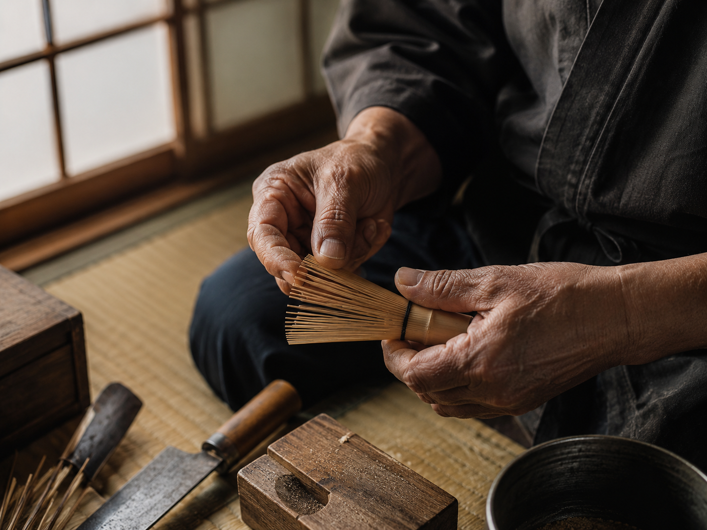
— Pillar I
Cultural & Brand Value
京都の竹が持つ文化的・歴史的価値を、明確に発信し世界に届ける。茶道・華道・建築・工芸など、京都の伝統文化の中で育まれてきた竹の物語を軸に、ハイブランド・伝統工芸・国内外の一流事業者に向けた価値訴求を行う。
単なる素材ではなく 「京都で育ち、京都で認証された竹」 という文化的正統性を付与することで、価格競争ではなく 価値競争 で勝負する基盤を築く。
— Pillar II
Scientific Evidence
京都の竹の物性を、科学的エビデンスで裏づける。大学の研究機関との共同研究により、嵐山マダケを京都竹の基準サンプルとして、他産地竹との硬さ・割裂性・耐久性・柔軟性などの比較研究を進める。
宮津・舞鶴など寒冷地で産する 孟宗竹 は、剣道防具の胴や扇子・団扇の用途で既に優位性が知られており、こうした「寒冷地由来の竹の物性上の強み」も研究対象として位置づける。
[ 03 ／ Certification ]
原竹認証と製品認証の二段構造。原料段階と製品段階の双方でトレーサビリティを確保し、ブランド価値を累積的に積み上げる。
[ 01 ]
Raw Bamboo Certification
伐採・搬出における出所と整備実績を保証。第一フェーズで運用。
[ 02 ]
Product Certification
利活用方法と製品品質を保証。第二フェーズで運用。
※ 京都府産木材認証制度（ウッドマイレージCO2京都の木認証、京都木材規格、木京 等）で既に実証されているスキームを踏襲。
竹は木材と違い毎年発生し、放置された竹林を再生するのにも5年以上を要する。第一フェーズから第三フェーズまで、段階をおいて実施する。
[ Phase 01 ]
令和7年度 ／ 2025
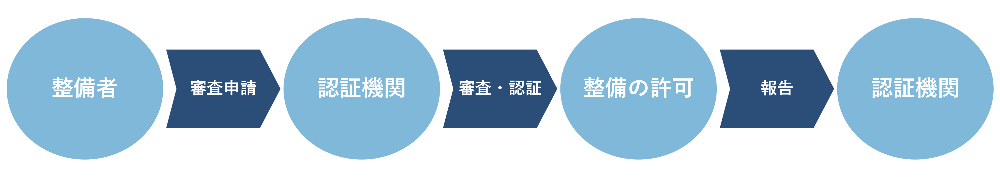
[ Phase 02 ]
令和8年度〜 ／ 2026〜
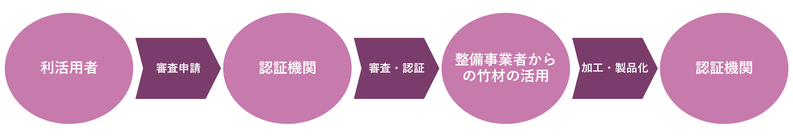
[ Phase 03 ]
令和9年度〜 ／ 2027〜
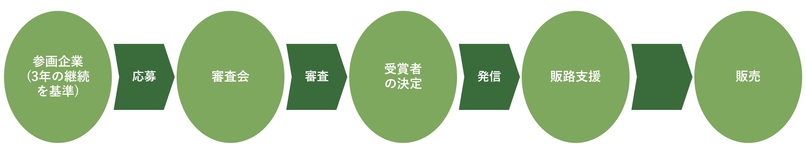
[ 04 ／ Benefits ]
京の竹認証制度を取得した竹加工事業者・竹製品メーカーには、京都の竹というブランド価値を活かしたビジネス展開の選択肢が広がる。
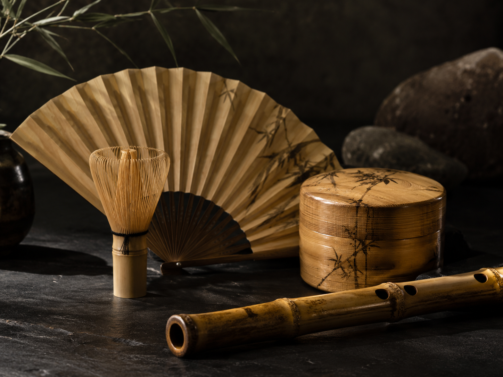
[ 01 ]
認証された原竹・製品に、京の竹認証マーク（ラベル・シール）を貼付・表示できる権利。商品パッケージ・カタログ・公式WEBサイト等での使用を通じ、「京都の竹」というストーリーで価格競争から脱却する基盤を獲得します。
[ 02 ]
研究機関との共同研究による物性データ（硬さ・割裂性・耐久性・柔軟性等）を、商品訴求の根拠としてご活用いただけます。職人の経験則だけでなく、研究機関による客観的な裏づけを商品価値に結びつけます。
[ 03 ]
原竹認証（Stage 01）と製品認証（Stage 02）の二段構造により、伐採地から最終製品までの出所と整備実績が一貫して保証されます。ハイブランド・伝統工芸・建築用途など、品質と由来の説明責任が求められる取引で、信頼性の高い供給者として選ばれる基盤となります。
[ 04 ]
3年間継続して取り組まれた認証製品は、第三フェーズの受賞取組（竹版ウッドデザイン賞のイメージ）の対象となります。京都府知事賞・京都市長賞などの公的表彰との連動も視野に、業界内外での認知獲得を後押しします。
[ 05 ]
協議会の対外発信・プレスリリース・取材機会を通じ、認証事業者として個別の露出機会を獲得できます。「京都の竹」をめぐる業界全体の物語の中で、自社の取り組みを発信する場が広がります。
[ 06 ]
京都府・京都市・大学・産業界が参画する協議会のもとで、原料供給者・加工事業者・利活用事業者の交流と協業の場を提供します。京都の竹をめぐる事業者同士の連携機会を通じて、新たなビジネスの芽を育てます。
[ 05 ／ By the Numbers ]
制度の現在地を、数字で。
12社
Certified Companies
認証取得事業者
32ha
Managed Forest
整備竹林面積
3,840本
Certified Raw Bamboo
認証原竹本数
7団体
Partner Organizations
参画機関
※ サイト構成イメージ用のサンプル値。本番運用後に実績数値を反映。
[ 06 ／ Members ]
認証取得事業者による、これまでの受賞・展開実績の一部をご紹介します。
[ Award ] 京都市長賞 ／ 2026
株式会社 嵐山竹芸社
嵐山マダケを用いた伝統的工芸品の保存と次世代継承の取り組みが、第8回京都市長賞「ものづくり部門」で受賞。
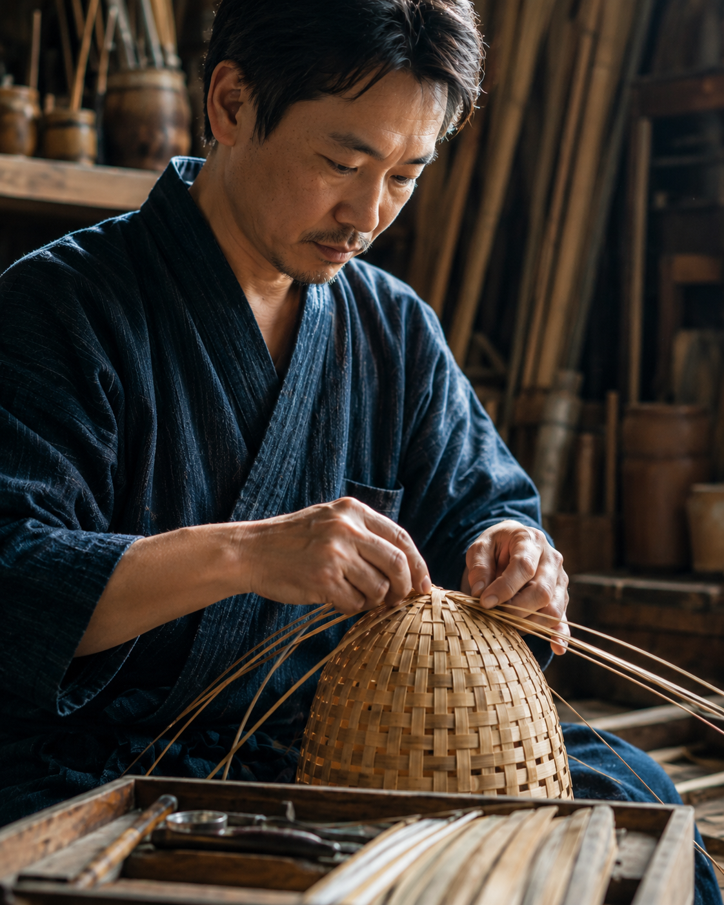
[ Award ] 京都府知事賞 ／ 2026
合資会社 高山竹工房
嵯峨野産マダケを使った高級茶筅の量産化・品質安定化技術が、京都府知事賞「伝統産業継承部門」で受賞。
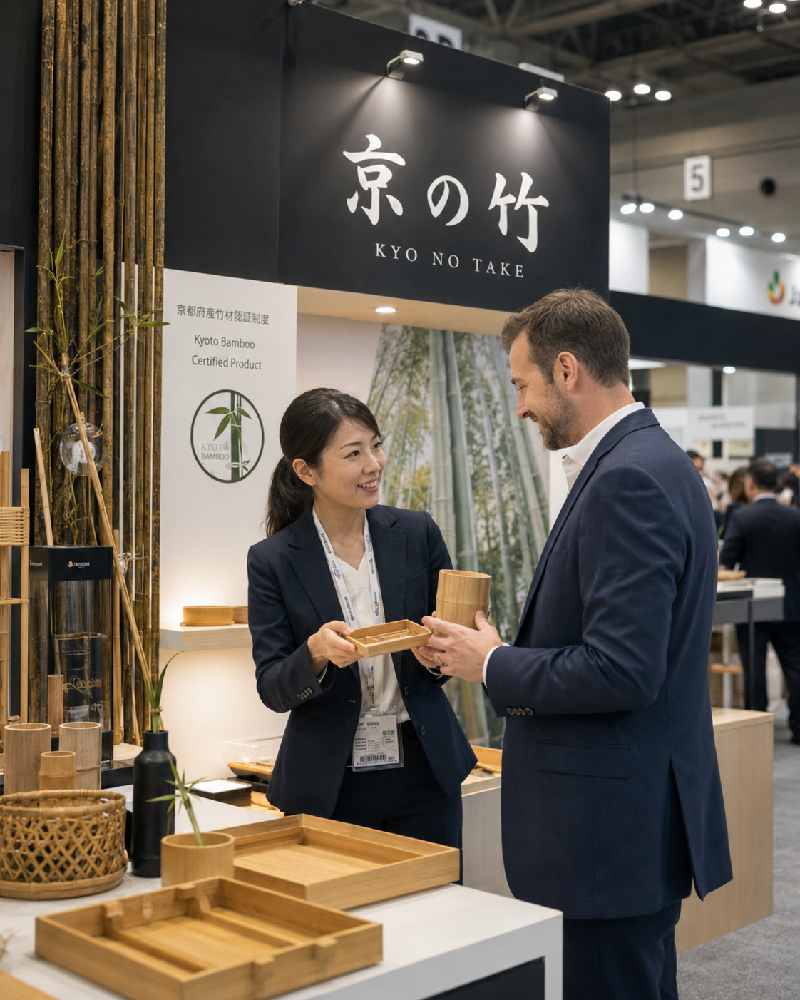
[ Global ] 海外展開 ／ 2026
京都竹インターナショナル株式会社
国際展示会「Maison & Objet」に京の竹認証ブースとして出展。欧州のハイブランドバイヤーと商談多数。
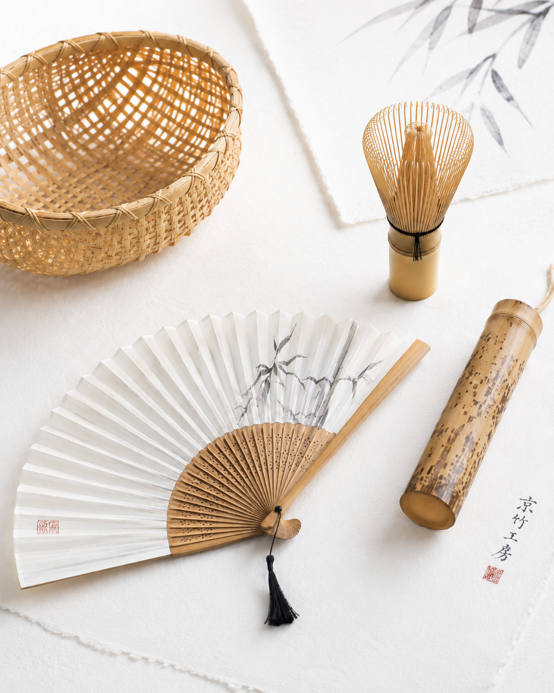
[ First ] 認証取得 第1号 ／ 2026
有限会社 京北竹材店
京都北部・京北地域の管理竹林にて、認証原竹(Stage 01)第一号として認定。ハイブランド向け工芸用材として供給開始。
[ Network ] 業界連携 ／ 2026
京都府竹工芸組合 ／ 加盟5社
伝統工芸の技術継承を目的に、認証事業者5社合同で若手職人育成プログラムを開始。
→ Scroll horizontally to view
[ 07 ／ Partners ]
[ 08 ／ News ]
協議会の活動、会合実施結果、研究進捗などを随時お知らせします。
[ 2026.05.15 ] Council
京都府庁にて第1回協議会会合を実施。原竹認証スキームの確定、参画事業者の確認、令和7年度第一フェーズ運用開始に向けた段取りを協議。
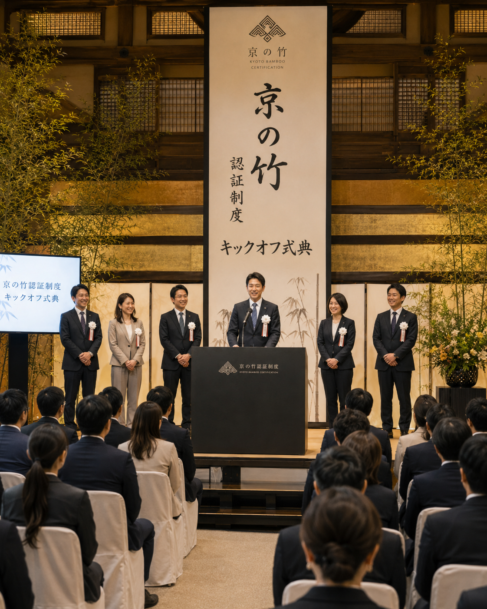
[ 2026.04.20 ] Ceremony
京都府・京都市の関係者をお招きし、京の竹認証制度のキックオフ式典を開催。協議会の発足と認証スキームの概要を発表。
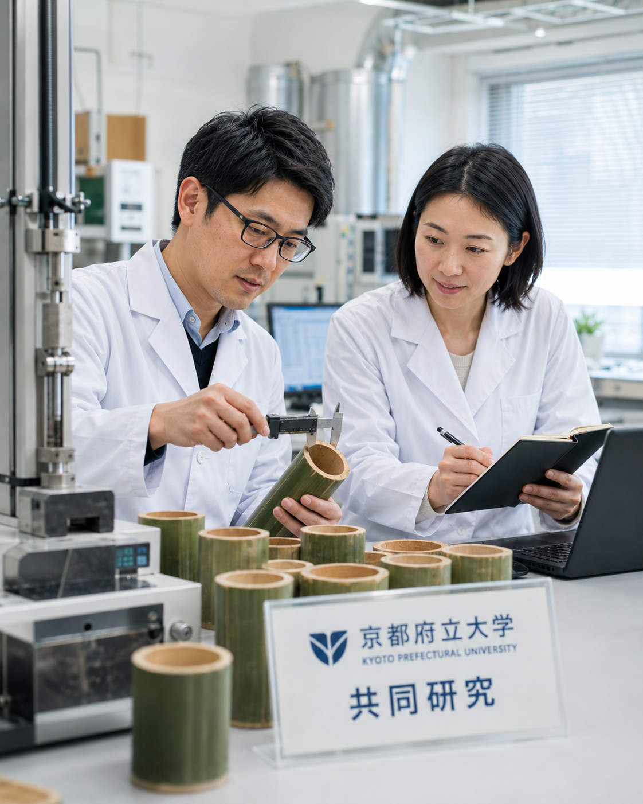
[ 2026.03.10 ] Research
嵐山マダケを京都竹の基準サンプルとした物性比較研究を開始。他産地竹との硬さ・割裂性・耐久性・柔軟性の科学的比較を進めます。
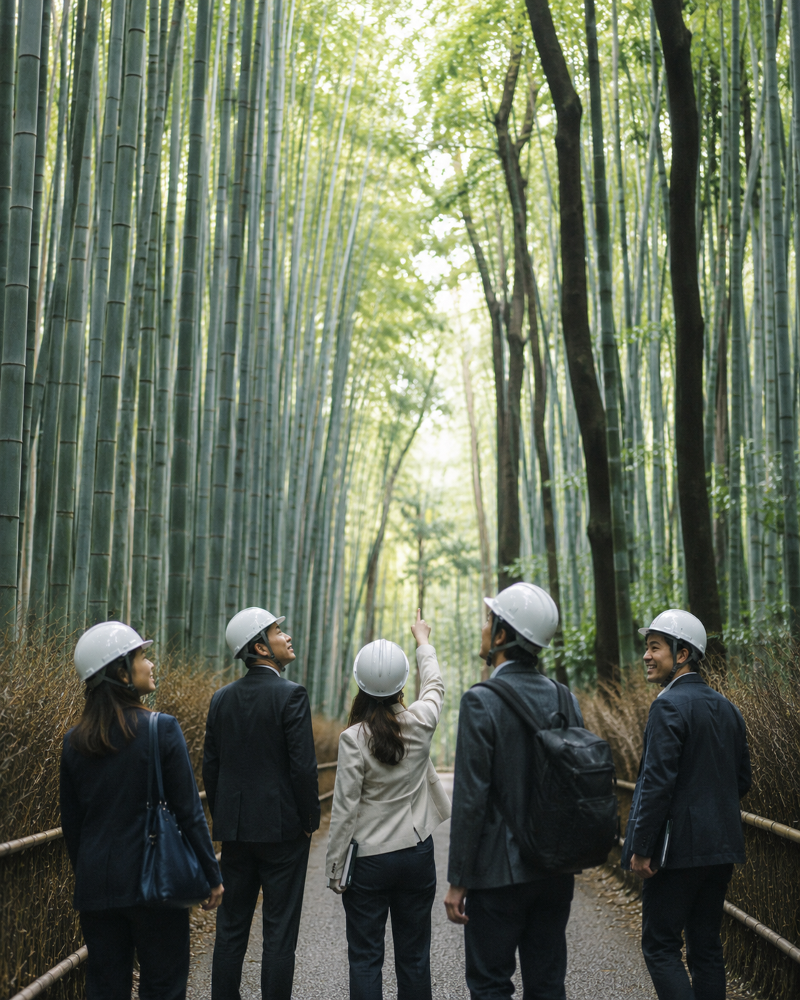
[ 2026.02.18 ] Field Tour
協議会メンバーおよび参画事業者を対象に、嵐山竹林(嵯峨野エリア)の視察ツアーを実施。実際の整備状況と認証対象竹林を確認。
→ Scroll horizontally to view
[ 09 ／ Press ]
[ 05 ／ Council ]
京の竹活用推進協議会は、認証を行う主体として自らは直接の商売を行わず、認証料および認証マーク（ラベル）使用料を主たる運営財源とする。
— Secretariat ／ 事務局
〇〇株式会社
— Committee Members
[ 委員長 ]
株式会社 A〇〇
[ 副委員長 ]
株式会社 B〇〇
[ 委員 ]
株式会社 C〇〇
[ 委員 ]
合資会社 D〇〇
[ 委員 ]
有限会社 E〇〇
[ アドバイザー ]
〇〇大学 研究室
[ 事務局 ]
〇〇株式会社
※ 委員会メンバーは想定構成。確定後に正式名称へ差し替え。
[ 06 ／ Contact ]
認証制度・委員会・取材等に関するお問い合わせは、事務局までご連絡ください。